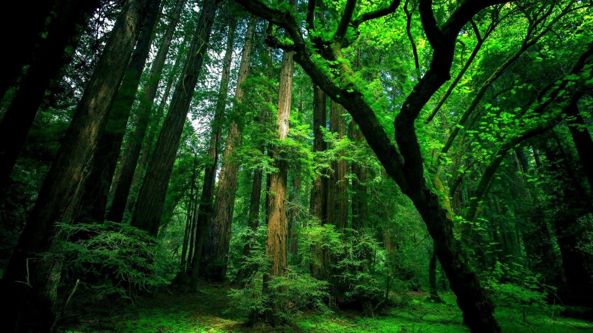

Overview of Green Agriculture - Student 1

What is Green Agriculture?
Green agriculture is an approach to farming that prioritizes environmental sustainability, biodiversity, and the health of both people and the planet. It emphasizes eco-friendly practices such as organic farming, crop rotation, composting, and reduced use of chemical fertilizers and pesticides.
By working with nature rather than against it, green agriculture helps preserve soil fertility, conserve water, and protect wildlife habitats. This approach is essential for ensuring food security and combating the negative impacts of conventional industrial agriculture.
Why Shift to Green Agriculture?
Traditional farming methods often lead to soil degradation, water pollution, and loss of biodiversity. Green agriculture offers a sustainable alternative that supports healthy ecosystems, reduces greenhouse gas emissions, and produces nutritious food for communities.
Green Agriculture Methods

Key Sustainable Practices
- Crop Rotation: Alternating crops each season to maintain soil nutrients and reduce pests.
- Composting: Recycling organic waste to enrich soil naturally and reduce landfill use.
- Organic Farming: Avoiding synthetic chemicals and GMOs, relying on natural fertilizers and pest control.
- Agroforestry: Integrating trees and shrubs into farmland to improve biodiversity and soil health.
- Water Conservation: Using drip irrigation, mulching, and rainwater harvesting to minimize water waste.
- Integrated Pest Management: Combining biological, cultural, and mechanical methods to control pests with minimal chemical use.
These methods not only protect the environment but also increase farm resilience to climate change and extreme weather events.
Benefits of Green Agriculture

Environmental and Social Advantages
- Biodiversity: Supports a wide range of plants, animals, and beneficial insects.
- Soil Health: Prevents erosion, improves fertility, and increases carbon storage.
- Cleaner Water: Reduces runoff of harmful chemicals into rivers and lakes.
- Climate Action: Lowers greenhouse gas emissions and helps farms adapt to changing conditions.
- Healthier Food: Produces crops with fewer chemical residues and higher nutritional value.
- Economic Opportunities: Opens new markets for organic and sustainably grown products.
Green agriculture is a win-win for people and the planet, ensuring long-term productivity and well-being for future generations.
The Role of Communities

Empowering Local Farmers
- Community Gardens: Bring people together to grow food sustainably and share knowledge.
- Farmer Cooperatives: Enable smallholders to access resources, training, and fair markets.
- Education & Outreach: Spread awareness of sustainable practices and their benefits.
- Local Food Systems: Reduce food miles and strengthen community resilience.
When communities embrace green agriculture, they build healthier environments, stronger economies, and a more secure food future for all.